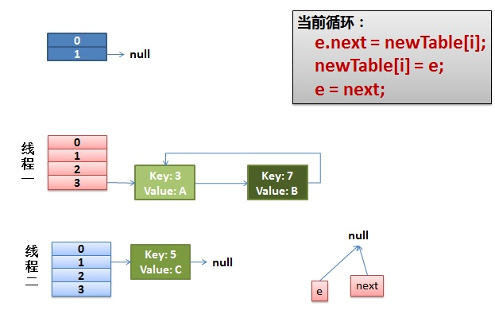

整理下收集来的资料
什么是Map
- Map就是用于存储键值对（<key,value>）的集合类
- map没有重复的 key
- 每个 key 只能对应一个 value, 多个 key 可以对应一个 value
- 传入key值相同的键值对，将作为覆盖处理
什么哈希（Hash）
- Hash把任意长度的输入，通过哈希函数，变换成固定长度的输出
- 数据的值叫做预映射
- 哈希函数是散列算法的一种实现（例如HashCode()）
- 输出的值就是HashCode
- 这个计算过程就叫做Hash/哈希/散列
什么是HashMap
-
HashMap是用哈希表（数组加单链表）+红黑树（1.8加入）实现的Map
继承AbstractMap，实现了Map，Serializable且线程不安全的Map
-
通过拉链法来解决哈希冲突，将发生碰撞的节点连接成一条单链表
-
允许null键和null值
-
不保证有序，即元素的插入和读取顺序不保证一致
-
也不保证元素的顺序始终不变，在扩容时，元素的顺序会重新被打乱
简述jdk7和jdk8中Hash的区别
-
jdk7 数组+单链表 jdk8 数组+(单链表+红黑树)
-
jdk7 链表头插 jdk8 链表尾插
JDK1.7用的是头插法，而JDK1.8及之后使用的都是尾插法，那么他们为什么要这样做呢？因为JDK1.7是用单链表进行的纵向延伸，当采用头插法时会容易出现逆序且环形链表死循环问题。但是在JDK1.8之后是因为加入了红黑树使用尾插法，能够避免出现逆序且链表死循环的问题
-
jdk7 先扩容再put jdk8 先put再扩容
先扩容再put就是不管当前插入的值所属的桶是不是空，都先扩容，会造成无效扩容；先put在扩容，会在put时发现是否当前桶为空，即是否发生hash冲突，如果发生了就扩容，不发生就等下一次插入冲突或大于阀值时扩容
-
jdk7 计算hash运算多 jdk8 计算hash运算少
-
jdk7 受rehash影响 jdk8 调整后是(原位置)or(原位置+旧容量)
-
JDK8增加了Spliterator进行遍历
源码分析
哈希函数计算结果越分散均匀，哈希碰撞的概率就越小，map的存取效率就会越高。
哈希表长度越长，空间成本越大，哈希函数计算结果越分散均匀。
扩容机制和哈希函数越合理， 空间成本越小，哈希函数计算结果越分散均匀。
负载因子越大（长度一定），最大结点容量越大，resize次数越少，空间成本越小，map的存取效率就会越高。
桶数组初始容量（长度）越大（加载因子一定），最大结点容量越大，resize次数越少，空间成本越大，map的存取效率就会越高
从HashMap的默认构造函数源码可知，构造函数就是对下面几个字段进行初始化。
1 | int threshold; // 最大node结点（键值对）容量，threshold = CAPACITY * LoadFactor，超过这个数目就重新resize(扩容)，扩容后的threshold是之前的两倍。 |
为什么加入红黑树
即使负载因子和哈希函数设计的再合理，也免不了会出现拉链过长（桶内结点过多）的情况，一旦出现拉链过长，则会严重影响HashMap的性能。
于是，在JDK1.8版本中，对数据结构做了进一步的优化，引入了红黑树。而当链表长度太长（默认超过8）时自动扩容把链表转成红黑树的数据结构来把时间复杂度从O（n）变成O（logN）提高了效率，利用红黑树快速增删改查的特点提高HashMap的性能
为什么在JDK1.8中进行对HashMap优化的时候，把链表转化为红黑树的阈值是8,而不是7或者不是20呢（面试蘑菇街问过）？
如果选择6和8（如果链表小于等于6树还原转为链表，大于等于8转为树），中间有个差值7可以有效防止链表和树频繁转换。假设一下，如果设计成链表个数超过8则链表转换成树结构，链表个数小于8则树结构转换成链表，如果一个HashMap不停的插入、删除元素，链表个数在8左右徘徊，就会频繁的发生树转链表、链表转树，效率会很低。
还有一点重要的就是由于treenodes的大小大约是常规节点的两倍，因此我们仅在容器包含足够的节点以保证使用时才使用它们，当它们变得太小（由于移除或调整大小）时，它们会被转换回普通的node节点，容器中节点分布在hash桶中的频率遵循泊松分布，桶的长度超过8的概率非常非常小。所以作者应该是根据概率统计而选择了8作为阀值
为什么在JDK1.7的时候是先进行扩容后进行插入，而在JDK1.8的时候则是先插入后进行扩容的呢？
其实就是当这个Map中实际插入的键值对的值的大小如果大于这个默认的阈值的时候（初始是16*0.75=12）的时候才会触发扩容，
1 | //其实就是当这个Map中实际插入的键值对的值的大小如果大于这个默认的阈值的时候（初始是16*0.75=12）的时候才会触发扩容， |
其实这个问题也是JDK8对HashMap中，主要是因为对链表转为红黑树进行的优化，因为你插入这个节点的时候有可能是普通链表节点，也有可能是红黑树节点，但是为什么1.8之后HashMap变为先插入后扩容的原因，我也有点不是很理解？欢迎来讨论这个问题？
但是在JDK1.7中的话，是先进行扩容后进行插入的，就是当你发现你插入的桶是不是为空，如果不为空说明存在值就发生了hash冲突，那么就必须得扩容，但是如果不发生Hash冲突的话，说明当前桶是空的（后面并没有挂有链表），那就等到下一次发生Hash冲突的时候在进行扩容，但是当如果以后都没有发生hash冲突产生，那么就不会进行扩容了，减少了一次无用扩容，也减少了内存的使用
HashMap 1.7 / 1.8差异分析
| 差异种类 | HashMap 1.7 | HashMap 1.8 |
|---|---|---|
| 数据结构 | 数组+链表 | 数组+链表+红黑树，当链表lenth>8则转换为红黑树，在resize()后，所有数据位置会重新计算，如果红黑树的元素个数<=6则转回链表 |
| 初始化方式 | inflateTable() | resize() |
| hash计算方式 | hashCode() , 扰动处理（4次位运算+5次异或运算） | hashCode() , 扰动处理（1次位运算+1次异或运算） |
| 数据存放方式 | 无冲突时存放数组，有冲突时存放单链表 | 无冲突时存放数组，有冲突存放链表（长度<8）或红黑树(长度>=8) |
| 数据插入方式 | 头插法（将原有数据后移一位） | 尾插法（直接插入链表或红黑树尾部） |
| 扩容后存储位置的计算方式 | 全部重新计算（hashCode()>扰动处理>&(lenth-1)） | 原位置/原位置+老table.lenth |
| 扩容后转移老数据的方式 | 头插法（原数据后移一位，会出现逆序，环形链表，死循环等问题） | 尾插法（不会出现逆序，环形列表，死循环等问题） |
| 扩容时机 | 先判断>阀值扩容后再插入 | 先插入数据然后判断>阀值扩容 |
| 旧数据转移时的位置计算时机 | 单独计算 | 转移时统一计算 |
HashMap死循环分析
HashMap 导致 CPU 100% 的原因就是因为 HashMap 死循环导致的，那 HashMap 是如何造成死循环的？接下来我们一起来看。
以 JDK 1.7 为例，假设 HashMap 的默认大小为 2，HashMap 本身中有一个键值 key(5)，我们再使用两个线程：t1 添加 key(3)，t2 添加 key(7)，首先两个线程先把 key(3) 和 key(7) 都添加到 HashMap 中，此时因为 HashMap 的长度不够用了就会进行扩容操作，然后这时线程 t1 在执行到 Entry<K,V> next = e.next; 时，交出了 CPU 的使用权，源代码如下：
1 | void transfer(Entry[] newTable, boolean rehash) { |
那么此时线程 t1 中的 e 指向了 key(3)，而 next 指向了 key(7) ；之后线程 t2 重新 rehash 之后链表的顺序被反转，链表的位置变成了 key(5) -> key(7) -> key(3)，其中 “->” 用来表示下一个元素，当 t1 重新获得执行权之后，先执行 newTalbe[i] = e 把 key(3) 的 next 设置为 key(7)，而下次循环时查询到 key(7) 的 e.next 为 key(3)，于是就形 成了 key(3) 和 key(7) 的环形引用，就导致了死循环的产生，如下图所示：
HashMap 发生死循环的一个重要原因是 JDK 1.7 时链表的插入是首部倒序插入的，而 JDK 1.8 时已经变成了尾部插入，有人把这个死循环的问题反馈给了 Sun 公司，但它们认为这不是一个问题，因为 HashMap 本身就是非线程安全的，如果要在多线程使用建议使用 ConcurrentHashMap 替代 HashMap，但面试中这个问题被问的频率比较高，所以在这里就特殊说明一下
问题的症状
从前我们的Java代码因为一些原因使用了HashMap这个东西，但是当时的程序是单线程的，一切都没有问题。后来，我们的程序性能有问题，所以需要变成多线程的，于是，变成多线程后到了线上，发现程序经常占了100%的CPU，查看堆栈，你会发现程序都Hang在了HashMap.get()这个方法上了，重启程序后问题消失。但是过段时间又会来。而且，这个问题在测试环境里可能很难重现。
我们简单的看一下我们自己的代码，我们就知道HashMap被多个线程操作。而Java的文档说HashMap是非线程安全的，应该用ConcurrentHashMap。
但是在这里我们可以来研究一下原因。
Hash表数据结构
我需要简单地说一下HashMap这个经典的数据结构。
HashMap通常会用一个指针数组（假设为table[]）来做分散所有的key，当一个key被加入时，会通过Hash算法通过key算出这个数组的下标i，然后就把这个<key, value>插到table[i]中，如果有两个不同的key被算在了同一个i，那么就叫冲突，又叫碰撞，这样会在table[i]上形成一个链表。
我们知道，如果table[]的尺寸很小，比如只有2个，如果要放进10个keys的话，那么碰撞非常频繁，于是一个O(1)的查找算法，就变成了链表遍历，性能变成了O(n)，这是Hash表的缺陷（可参看《Hash Collision DoS 问题》）。
所以，Hash表的尺寸和容量非常的重要。一般来说，Hash表这个容器当有数据要插入时，都会检查容量有没有超过设定的thredhold，如果超过，需要增大Hash表的尺寸，但是这样一来，整个Hash表里的元素都需要被重算一遍。这叫rehash，这个成本相当的大。
相信大家对这个基础知识已经很熟悉了。
HashMap的rehash源代码
下面，我们来看一下Java的HashMap的源代码。
Put一个Key,Value对到Hash表中：
检查容量是否超标
新建一个更大尺寸的hash表，然后把数据从老的Hash表中迁移到新的Hash表中。
迁移的源代码，注意高亮处：
好了，这个代码算是比较正常的。而且没有什么问题。
正常的ReHash的过程
画了个图做了个演示。
-
我假设了我们的hash算法就是简单的用key mod 一下表的大小（也就是数组的长度）。
-
最上面的是old hash 表，其中的Hash表的size=2, 所以key = 3, 7, 5，在mod 2以后都冲突在table[1]这里了。
-
接下来的三个步骤是Hash表 resize成4，然后所有的<key,value> 重新rehash的过程

并发下的Rehash
**1）假设我们有两个线程。**我用红色和浅蓝色标注了一下。
我们再回头看一下我们的 transfer代码中的这个细节：
而我们的线程二执行完成了。于是我们有下面的这个样子。

注意，因为Thread1的 e 指向了key(3)，而next指向了key(7)，其在线程二rehash后，指向了线程二重组后的链表。我们可以看到链表的顺序被反转后。
2）线程一被调度回来执行。
- 先是执行 newTalbe[i] = e;
- 然后是e = next，导致了e指向了key(7)，
- 而下一次循环的next = e.next导致了next指向了key(3)

3）一切安好。
线程一接着工作。把key(7)摘下来，放到newTable[i]的第一个，然后把e和next往下移。

4）环形链接出现。
e.next = newTable[i] 导致 key(3).next 指向了 key(7)
注意：此时的key(7).next 已经指向了key(3)， 环形链表就这样出现了。

于是，当我们的线程一调用到，HashTable.get(11)时，悲剧就出现了——Infinite Loop。
此时两个线程put完毕，线程二先完成rehash，之后再线程一rehash，线程一最终put的链形成了闭环，但是这两个线程没有死循环，只是后来get的线程如果进入这个闭环链，就死循环了，并且进入的线程越多，CPU消耗的越大，最终到达100%
参考文章
CSDN博主「依本多情」https://blog.csdn.net/qq_36520235/article/details/82417949
CSDN博主「酒吧七」https://blog.csdn.net/qq_36711757/article/details/80394272